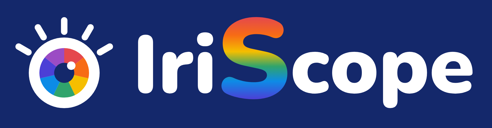

Iriscope est une appli gratuite qui réunit, pour chaque habitant, les sorties de son coin. Votre programme y a toute sa place.
Une toute petite équipe française, passionnée par la vie locale. Nous voulons que chacun, du jeune au retraité, trouve facilement ce qui se passe près de chez lui : concerts, spectacles, séances de cinéma, marchés, balades. Pas de grands groupes derrière nous, et nous tenons à ce que les salles de proximité soient mises en avant.
Ils apparaissent près de chez eux, avec le nom de votre salle, vos horaires et votre affiche.
Chaque matin, l'appli résume la météo, la route et ce qui se passe dans la journée.
Vos spectateurs voient votre salle sur la carte, avec l'itinéraire pour s'y rendre.
Les sorties sont proposées selon l'âge des enfants, les goûts et le budget.
Une question, une envie d'essayer, ou besoin d'un document ? Écrivez-nous, nous répondons personnellement.
contact.iriscope@gmail.com